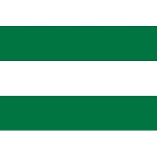

Descripción de la provincia
Los Ríos está ubicada en la región Costa del Ecuador. Su capital es Babahoyo. Es una provincia de gran importancia agrícola, con producción de arroz, banano, cacao, maíz y otros cultivos. Sus ríos, paisajes rurales y tradiciones montuvias forman parte de su identidad.
Identidad y vida provincial
Los ríos y las zonas de cultivo forman parte del paisaje característico de la provincia. La actividad agrícola genera trabajo y facilita el comercio entre comunidades rurales y centros urbanos. Las tradiciones montuvias, la comida típica y las festividades populares enriquecen su patrimonio cultural.
Visitar Los Ríos permite conocer mercados, parques, espacios junto a los ríos y rutas hacia distintos cantones. Cada localidad aporta su propia historia y distintas formas de vida relacionadas con la agricultura y el entorno natural.
Bandera
La bandera provincial de Los Ríos está formada por tres franjas horizontales: verde, blanco y verde.

Datos generales
- Capital provincial: Babahoyo.
- Población provincial: 898.652 habitantes (Censo 2022).
- Región: Costa.
- Fecha de creación provincial: 6 de octubre de 1860.
- División política: 13 cantones.
Prefecto provincial
Johnny Terán Salcedo — prefecto provincial de Los Ríos, período 2023–2027. El gobierno provincial impulsa obras viales, apoyo al sector productivo y programas de atención comunitaria.
Gobernador de Los Ríos
Andrés Rizzo Bajaña — gobernador de Los Ríos, período 2026. La Gobernación coordina acciones de las instituciones del Ejecutivo en temas de seguridad, articulación territorial y servicios a la ciudadanía.
Mapa de la provincia de Los Ríos
Mapa de la provincia consultado directamente desde Google Maps.
Abrir la provincia de Los Ríos en Google Maps
Menú de los 13 cantones
Selecciona el nombre de un cantón para conocer su reseña, población, parroquias, autoridad municipal, platos típicos, lugares de interés y su ubicación en el mapa. Cada página incluye un enlace para volver al inicio.
- Cantón Baba — 45.296 habitantes (Censo 2022)
- Cantón Babahoyo — 178.505 habitantes (Censo 2022)
- Cantón Buena Fe — 74.410 habitantes (Censo 2022)
- Cantón Mocache — 42.026 habitantes (Censo 2022)
- Cantón Montalvo — 28.354 habitantes (Censo 2022)
- Cantón Palenque — 24.838 habitantes (Censo 2022)
- Cantón Puebloviejo — 40.961 habitantes (Censo 2022)
- Cantón Quevedo — 206.008 habitantes (Censo 2022)
- Cantón Quinsaloma — 19.470 habitantes (Censo 2022)
- Cantón Urdaneta — 33.151 habitantes (Censo 2022)
- Cantón Valencia — 51.509 habitantes (Censo 2022)
- Cantón Ventanas — 73.211 habitantes (Censo 2022)
- Cantón Vinces — 80.909 habitantes (Censo 2022)
Fuentes de consulta
- Instituto Nacional de Estadística y Censos (INEC) — Censo 2022.
- Asociación de Municipalidades Ecuatorianas (AME) — directorio de alcaldes 2023–2027.
- CONGOPE — información turística provincial.
- Guía de gastronomía de Los Ríos.